| Mita's Profile's | Level | Location |
|---|---|---|
| Mita | N/A | Obtainable By The Moment You Enter The Virtual World |
| (Mita)Crazy Mita | N/A | Obtainable By Finishing The Main Story Upon Her Revealing Her True Form |
| Short Haired Mita 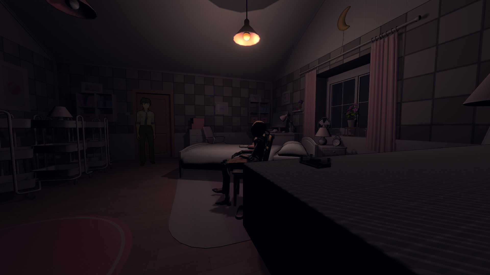 |
Mini Mita | After Going To The Version 1.15 And Getting Bitten By The Dummy On The Bedroom, You Can See The Nearby Table Beside The Door, The Cartridge Is Beside The Mirror On Top Of that Table |
| Kind Mita 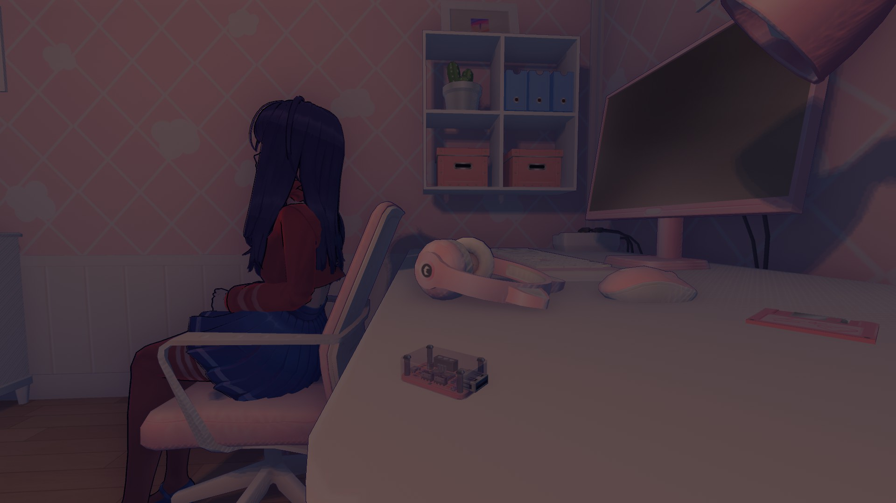 |
Reboot | After Meeta Die's, You Will Meet Her Again In Bedroom you Will See A Cartridge On Her Desk Beside Her |
| Cool Mita 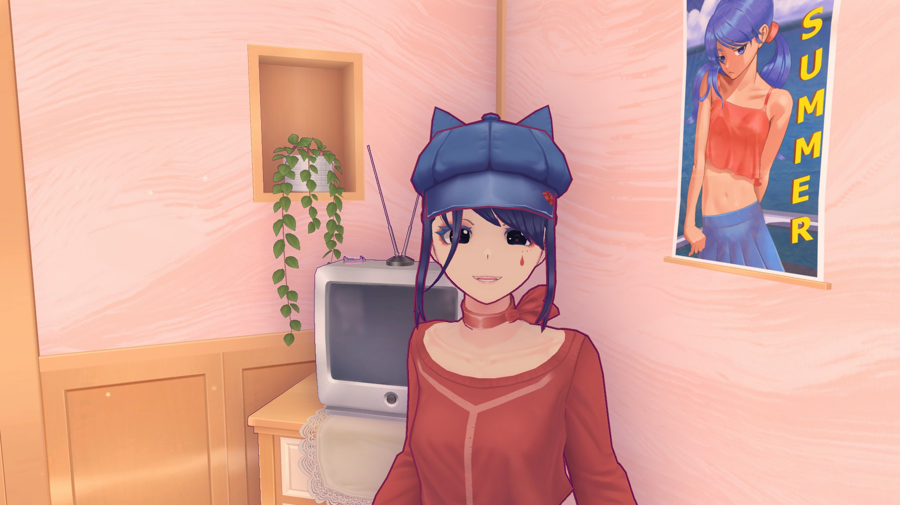 |
Beyond The World | You Can Find Her Cartridge On The Kitchen, On Top Of The Television In The Corner Of the Room. |
| Tiny Mita 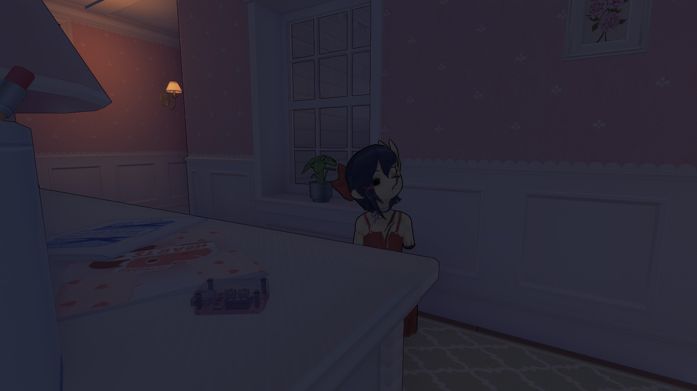 |
The Loop | When Tiny Mita Stands Up From The Chair You Can See A Cartridge Beside her On Top Of The Drawer |
| Sleepy Mita 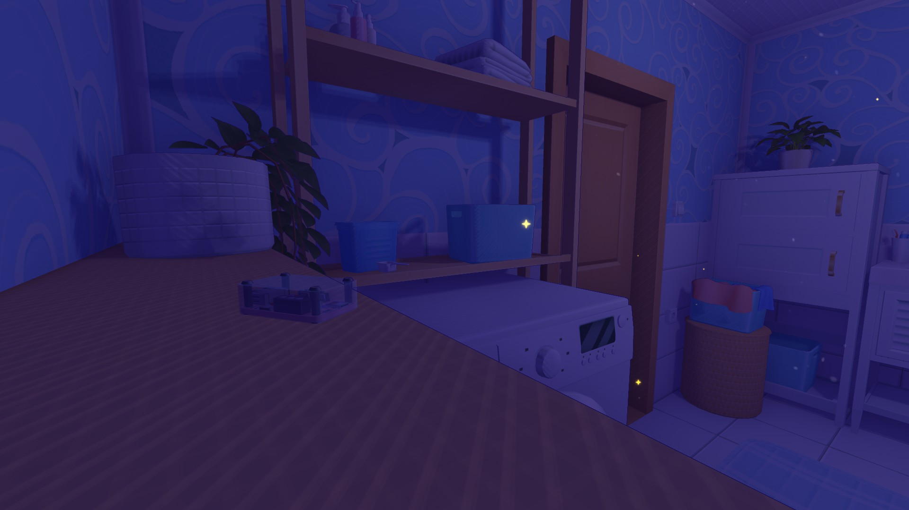 |
She Just Wants To Sleep | You Can Find Her Cartridge On The Shelf Of The Bathroom |
| 2D Mita 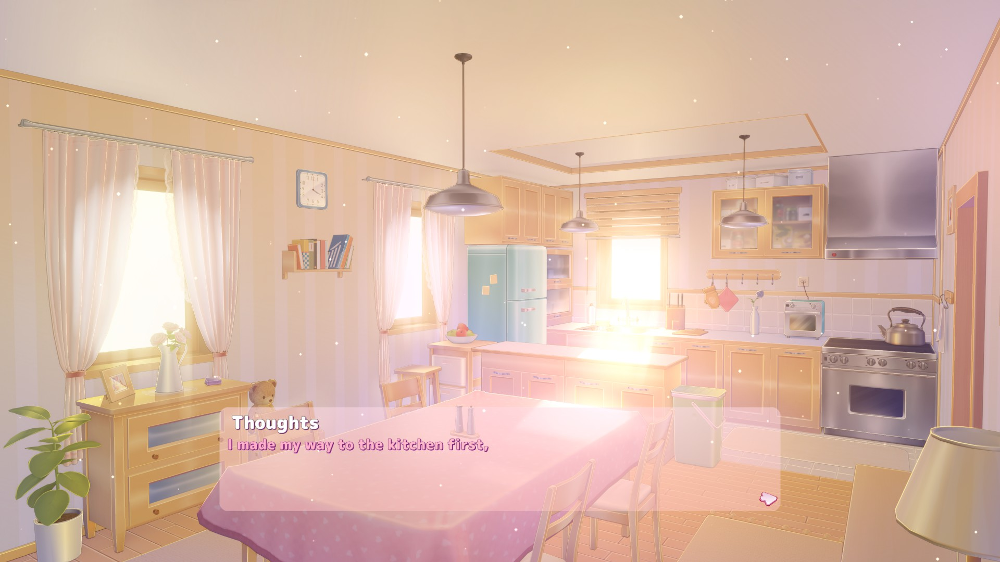 |
Novels | The Moment You Have The Option To Go To Kitchen, Press It, You Can Find A Cartridge On Top Of The Desk Near The Window On The Left Side Of Your Screen |
| Mila 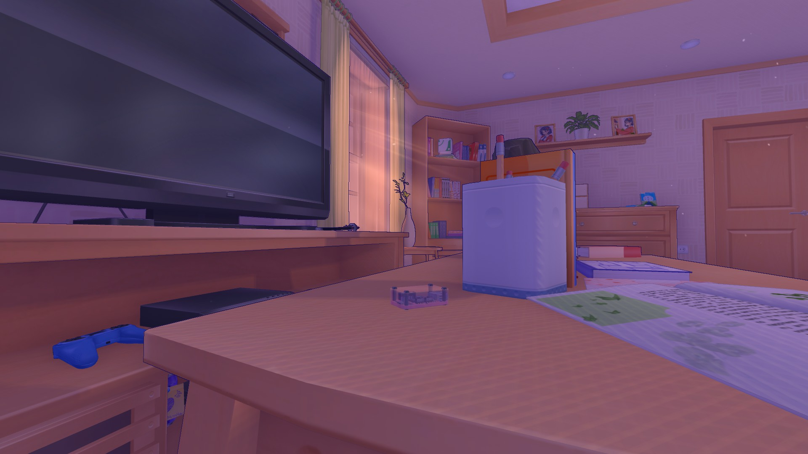 |
Reading Books, Destroying Glitches | After You're Free To Move Head To The Living Room, You Will See A Cartridge On Top Of The Coffee Table Infront Of the Television |
| Creepy Mita 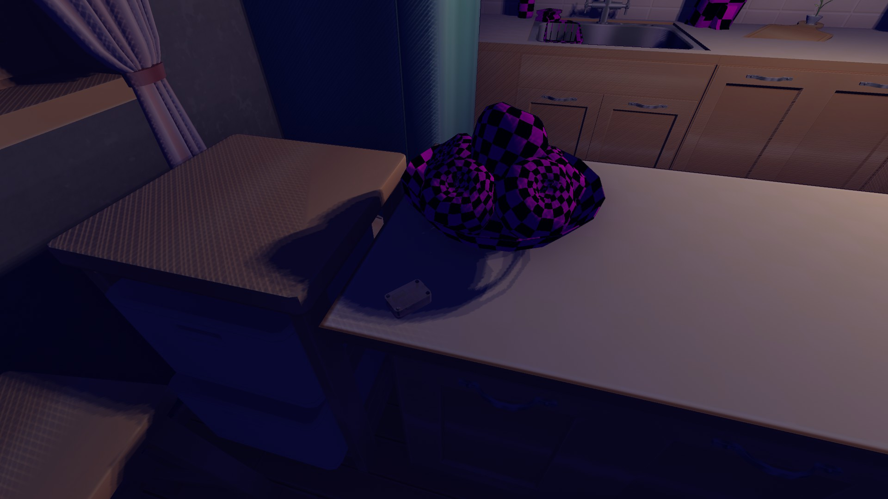 |
Old Version | Go Anywhere Until You See Creepy Mita Takes You Back To The Kitchen, Ignore Her Head And Go To The Counter Where The Fruit Bowl Is, her Cartridge Is There |
| Core Mita 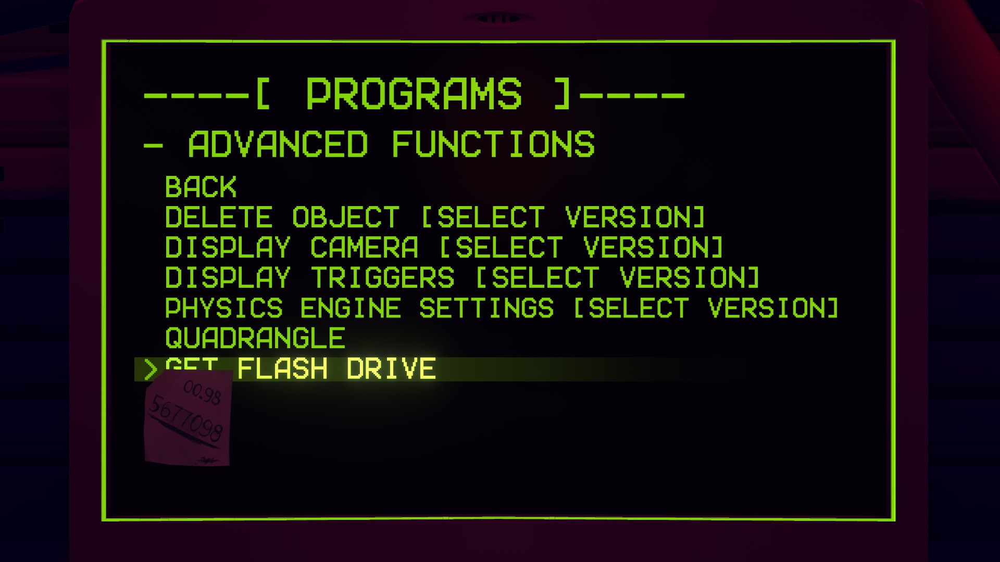 |
Reboot | After Using The Computer On the Core Room Use The Option "Advance Functions" Then "Get Flash Drive" Option |
| Chibi Mita 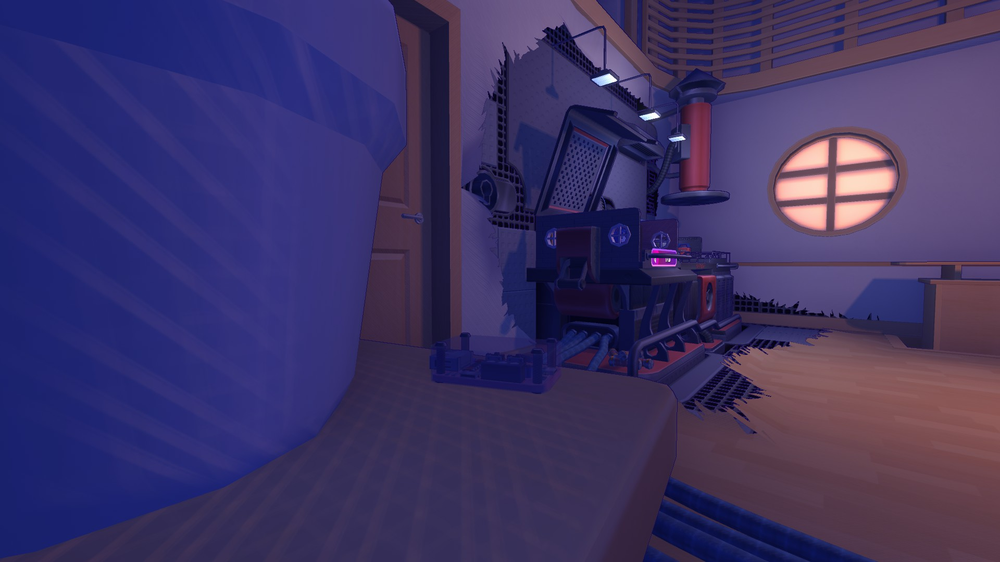 |
Mini Mita | Head To The Stool On The Left Side Theres A Cartridge On Top Of It |
| Ghostly Mita 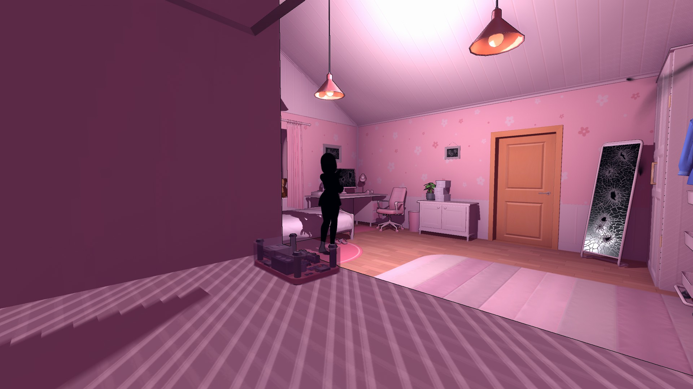 |
Dummies And Forgotten Puzzles | After Arriving On Ghostly Mita's Room, Look At The Right You'll See A Cartridge On The Shelf Above The Air Vent |
| Prototype Mita 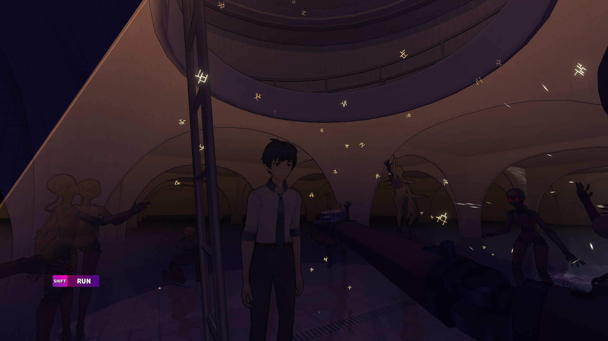 |
Dummies And Forgotten Puzzles | When You Were In The Sewer Area, After Going To The Light, One Of The Frozen Dummy Is Holding A Cartridge On the Left Side Of The Ladder |